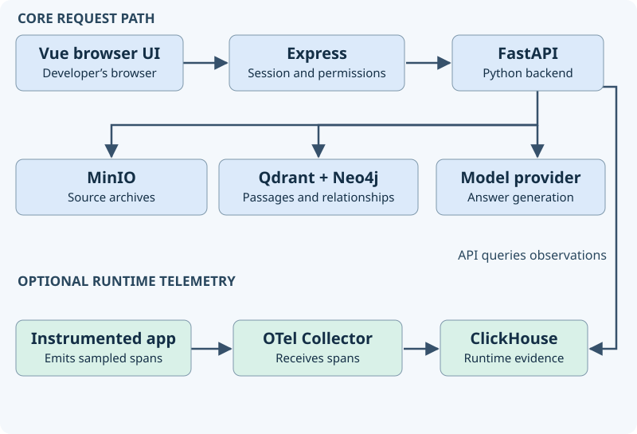
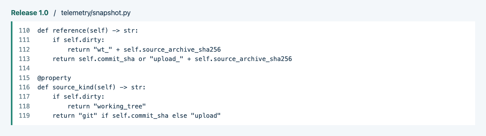
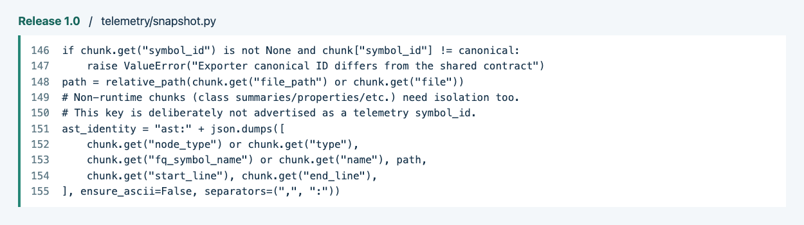
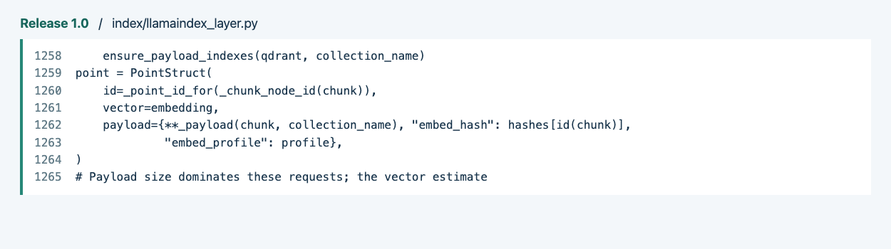
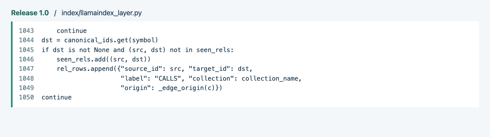

How the pieces connect

How indexing and graph building work
Imagine that InvoiceController calls MoneyFormatter::format. To find the formatter when you don’t know its name, you need search. To find the callers that might break if you change it, you need relationships. Release 1.0 builds both views from the same source revision. Use Index and ChatBusiness rule documents to start an index; the stages below explain what the backend does.
Identify the exact source
A Git snapshot uses the commit SHA. A ZIP without a commit uses an archive checksum prefixed with
upload_; a dirty working tree useswt_and its archive checksum. Together with the project ID, this keeps a search result from yesterday’s checkout separate from a result for today’s uncommitted edits.View release source screenshot

Read the excerpt in context: telemetry/snapshot.py Turn source into addressable chunks
The parser describes a method, function, or other syntax node as a chunk. Preparation attaches its relative file path and source identity. A supported method can have a canonical symbol ID; a class summary or property can instead use its node kind, name, path and line span. It stays searchable without claiming that it can be matched to a runtime call.
View release source screenshot

Read the excerpt in context: telemetry/snapshot.py Build the semantic index
The embedding provider turns a chunk’s searchable text into a vector. Qdrant stores that vector alongside the source and metadata. This lets a question about an “invoice total” find a method with a different name, then show the actual code. The embedding profile and content hash identify reusable embeddings; a similarity score alone does not establish that two methods call each other.
View release source screenshot

Read the excerpt in context: index/llamaindex_layer.py Connect callers to known targets
The graph builder creates nodes for indexed chunks and resolves extracted call targets against known symbols. For a match it writes a directed
CALLSedge with its collection and origin. Following the arrow finds callees; following it backwards finds callers. An unresolved dynamic call does not create a guessed target. The inspection graph can add richer reference and inheritance evidence when the corresponding indexer supports it.View release source screenshot

Read the excerpt in context: index/llamaindex_layer.py
For a strict source snapshot, the backend requires parsing and persistence of graph, vector and inspection data before marking it ready. Ready identifies a usable snapshot; it does not mean every dynamic reference was resolved.
What is stored for a code chunk?
The following are fields in the release’s Qdrant payload. Their availability depends on the language, parser and kind of symbol. For example, a free function has no owning class. The source body, vector and graph edge serve different purposes.
- Identity and location
- Project and revision metadata, chunk and node IDs, language, node type, short and fully qualified symbol names, relative file path, and start and end lines. These distinguish two methods named
formatand locate the cited one. - Declaration and body
- Namespace, owning class or parent symbol, signature, parameters, return type, modifiers, visibility, static flag, code, and available docblock or docstring. These let you check what a method accepts and what it actually does.
- Relationships and their evidence
- Imports, base classes, implemented interfaces, traits, called and referenced symbols, reference kinds, supporting evidence and unresolved-reference count. A recorded name is a clue; a resolved edge identifies a target.
- Search and assessment context
- When available: summary, literals, annotations, framework hints, domain tags, low-information flag, lines of code and extracted code metrics. Fields such as
revision_id,node_typeandfile_pathalso have keyword indexes for filtered scans. The embedding hash and profile describe how the vector was produced.
Which features use which evidence?
- Chat and code navigation
- Semantic search finds a starting passage. Graph expansion can bring in a direct caller or callee whose wording would never match the question. Open the file and line citation to check the answer.
- Change impact and Regression tracker
- Start with the formatter and walk upstream to find affected callers, along with routes and tests where evidence exists. Between two revisions, use those paths to choose regression checks. An affected route is a reason to test, not proof that its behavior changed. A partial report can miss callers.
- Code Quality
- Source and available metrics anchor findings to individual symbols. A long or complex method can be inspected at its cited lines; the graph adds context about callers affected by a refactor. External analyzer findings depend on running the relevant check.
- Front-End assistant
- The UI map and contract checks use feature-specific evidence such as routes and extracted HTTP calls. Use the backend index to investigate a handler after identifying the endpoint. A similar-looking backend method is not evidence that a screen calls it.
- Runtime telemetry
- Where a trace matches the project, revision and symbol, it adds an observed execution to the source picture. A static caller can exist without appearing in a sample, and indexing source alone does not collect traces.
What happens when you ask a question?
For “Where is the invoice total calculated?”, the API retrieves relevant passages and can follow graph relationships to nearby code. It supplies that context to the configured language model, then returns the answer and source references to the browser. Open a citation to check the calculation against the indexed revision. Later edits in your working copy need a new index to appear in that evidence.
Where do analysis and runtime evidence fit?
The Front-End assistant uses source evidence to map UI calls and check contracts. Code Quality can delegate supported checks to an analyzer worker. The Database schema workspace uses Draw.io to edit diagrams; an edited diagram is a design artifact, not a migration applied to your database.
Runtime telemetry has a separate input. An instrumented application emits spans to an OpenTelemetry Collector, and ClickHouse stores observations. The API can read those observations alongside source evidence. A graph edge can tell you that checkout can call a method; a matching span tells you that a sampled request did. You can index and explore source without connecting a running application.
Explore the release implementation
Architecture and package map · Web services · API, storage, and telemetry services